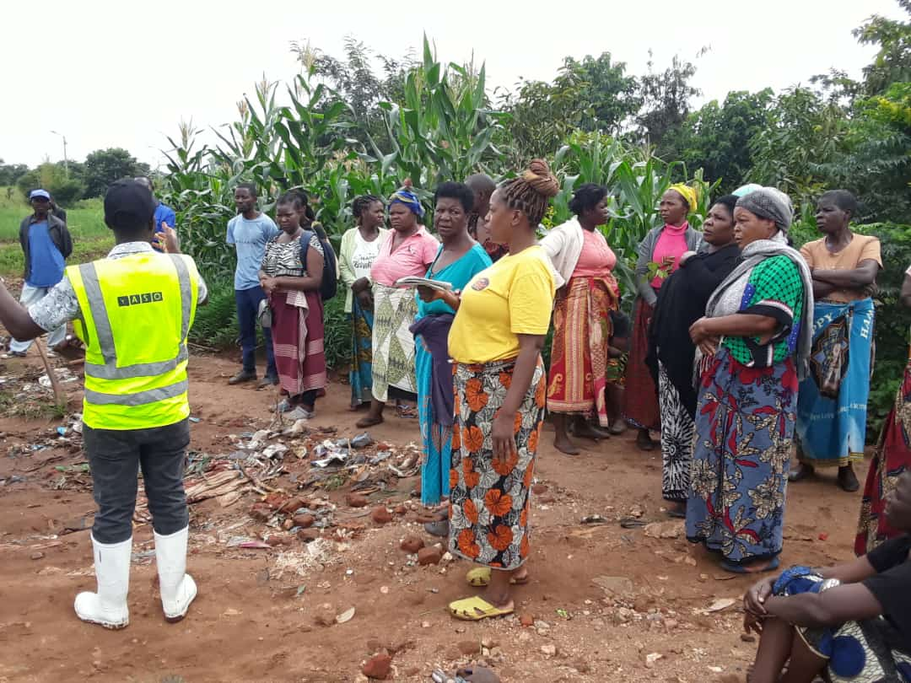
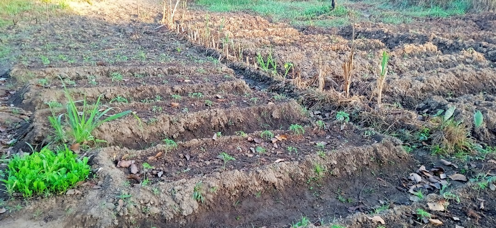
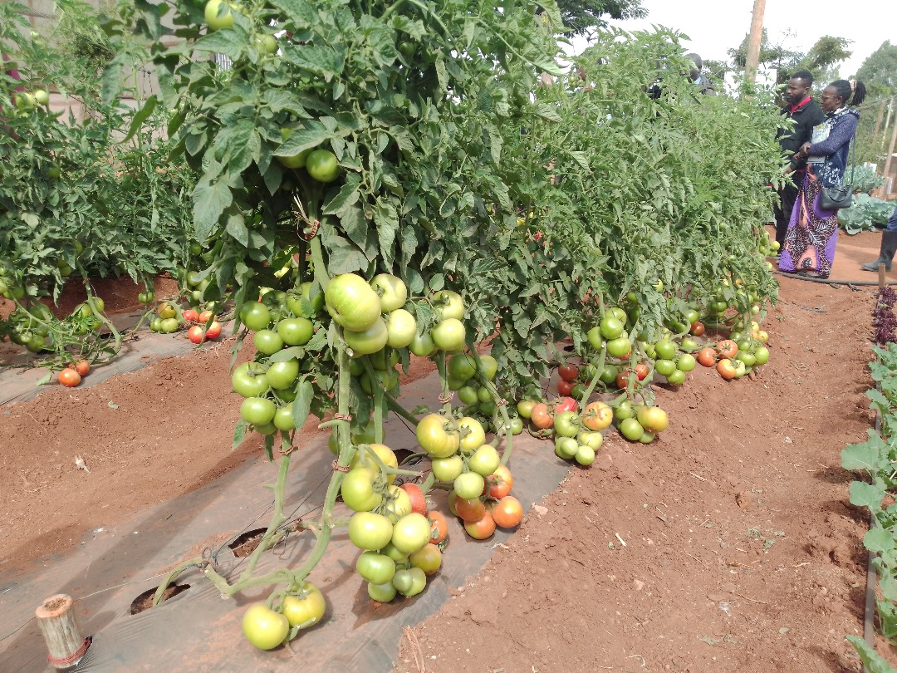

AFRIX54 Enterprise is transforming agriculture in Malawi through innovation, climate-smart farming, and diaspora-driven investment opportunities.


AFRIX54 Holdings is a purpose-driven agribusiness social enterprise established to revolutionize agriculture through climate-smart innovation, strategic farm management, and inclusive socio-economic development.
Rooted in Malawi, AFRIX54 promotes resilient food systems, agricultural entrepreneurship, and economic opportunities for marginalized communities and Malawians in the diaspora.
To deliver innovative climate-smart agricultural solutions that empower communities, promote sustainable livelihoods, and connect local farmers to global agricultural markets.
To become Africa’s leading hub for climate-smart agriculture, diaspora-driven farm investments, and inclusive rural development, setting the standard for environmental sustainability, food security, and economic transformation.
The principles that guide AFRIX54 in transforming agriculture and empowering communities.
We uphold transparency, accountability, and ethical practices in everything we do.
We embrace technology and new ideas to solve complex agricultural challenges.
We invest in people—especially women, youth, and smallholder farmers.
We prioritize environmental health, climate resilience, and long-term agriculture.
We believe in collaborative growth with communities, stakeholders, and investors.

AFRIX54 provides innovative agricultural solutions that support farmers, investors, and communities across Malawi.
Helping Malawians abroad invest in and manage productive farmland with full monitoring and transparent returns.
Designing sustainable farming systems including agroforestry, organic farming, and regenerative agriculture.
Integrating drip irrigation, mobile extension services, and precision agriculture tools.
Supporting smallholder farmers with training, inputs, and guaranteed markets.
Training youth through workshops, demo farms, and agricultural entrepreneurship programs.
Farm visits, eco-learning experiences, and agricultural short courses.
Processing and packaging farm produce to reduce post-harvest losses and improve profitability.
Providing seeds, fertilizers, tools, and high-quality agricultural inputs for farmers.
AFRIX54 is committed to driving sustainable development and empowering communities across Malawi.
Developing climate-smart agriculture to protect farmers from extreme weather.
Improving food availability, nutrition, and access for communities.
Providing training, employment, and entrepreneurial opportunities.
Creating sustainable employment and skill development in rural areas.
Connecting farmers to local, national, and international markets.
We’d love to hear from you. Reach out via phone, email, or visit our office.
Area 22, Near Crazimatic Schools,
Lilongwe, Malawi
+265 990 115 005
+265 888 280 678
+265 212 361 111
afrix54enterprise@gmail.com